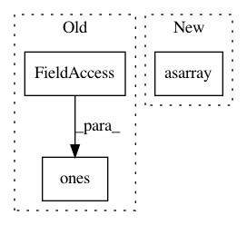

bffe96b0dde34b701946a1a71e7225bf6828df92,nilearn/decoding/searchlight.py,SearchLight,fit,#SearchLight#Any#Any#,262
Before Change
process_mask_coords = np.where(process_mask != 0)
process_mask_coords = \
np.asarray(process_mask_coords +
(np.ones(len(process_mask_coords[0]), dtype=np.int),))
process_mask_coords = np.dot(process_mask_affine,
process_mask_coords)[:3].T
After Change
process_mask_coords = coord_transform(
process_mask_coords[0], process_mask_coords[1],
process_mask_coords[2], process_mask_affine)
process_mask_coords = np.asarray(process_mask_coords).T
X, A = _apply_mask_and_get_affinity(
process_mask_coords, imgs, self.radius, True,
In pattern: SUPERPATTERN
Frequency: 4
Non-data size: 3
Instances
Project Name: nilearn/nilearn
Commit Name: bffe96b0dde34b701946a1a71e7225bf6828df92
Time: 2015-12-02
Author: abraham.alexandre@gmail.com
File Name: nilearn/decoding/searchlight.py
Class Name: SearchLight
Method Name: fit
Project Name: albu/albumentations
Commit Name: 34db6edd43ba14a56c357f7dc30a5057c95e7f13
Time: 2018-11-06
Author: marcocaccin@users.noreply.github.com
File Name: albumentations/augmentations/functional.py
Class Name:
Method Name: normalize
Project Name: nilearn/nilearn
Commit Name: bffe96b0dde34b701946a1a71e7225bf6828df92
Time: 2015-12-02
Author: abraham.alexandre@gmail.com
File Name: nilearn/input_data/nifti_spheres_masker.py
Class Name:
Method Name: _apply_mask_and_get_affinity
Project Name: scikit-learn-contrib/DESlib
Commit Name: bba1901f835525551dde9ec1537d041abc88d293
Time: 2021-04-08
Author: rafaelmenelau@gmail.com
File Name: deslib/static/oracle.py
Class Name: Oracle
Method Name: predict